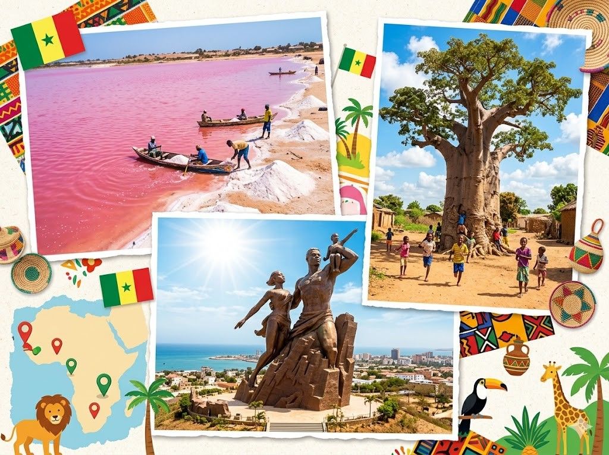
Hier stehen die wichtigsten Daten zu deinem Land. In der App baust du daraus deinen eigenen Steckbrief.
| Hauptstadt | Dakar |
| Kontinent | Afrika |
| Sprache | Französisch und Wolof |
| Währung | CFA-Franc |
| Einwohner | rund 20 Millionen Menschen |
| Fläche | Etwa 197.000 Quadratkilometer, das ist gut halb so groß wie Deutschland. |
| Großer Berg | Der höchste Punkt liegt nur bei rund 645 Metern in den Nepen-Diakha-Bergen. Senegal ist also sehr flach und hat kaum Berge. |
| Nachbarländer | Mauretanien, Mali, Guinea, Guinea-Bissau und Gambia |
In Senegal gibt es viele berühmte Orte. Diese vier solltest du kennen.
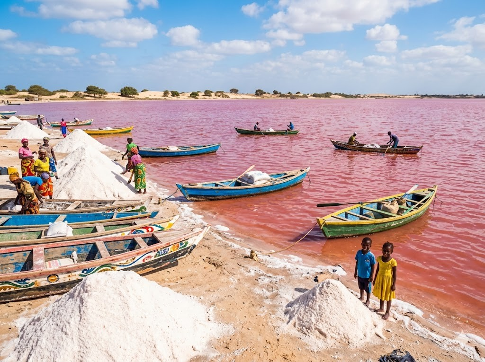
Der Rosa SeeDer Lac Rose ist ein kleiner See in der Nähe von Dakar. Sein Wasser leuchtet oft rosa. Schuld daran sind winzige Algen im salzigen Wasser. Das Wasser ist so salzig, dass man darin kaum untergeht. Menschen holen hier viel Salz aus dem See.
Grüne Wörter für die AppLac Roserosawinzige Algensalzigen WasserSalz
Die Insel GoréeÎle de Gorée ist eine kleine Insel vor Dakar. Sie hat bunte alte Häuser und enge Gassen. Hier gibt es ein ernstes Museum über die Geschichte. Vor langer Zeit wurden hier Menschen gefangen gehalten. Heute besuchen viele Gäste die Insel und denken an diese Zeit.
Grüne Wörter für die AppÎle de Goréekleine Inselbunte alte Häuserein ernstes Museumviele Gäste
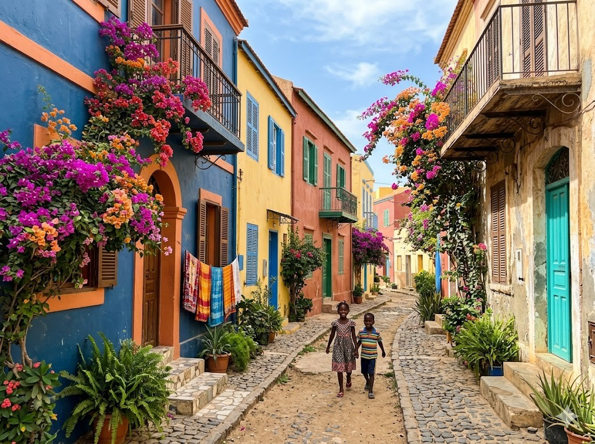
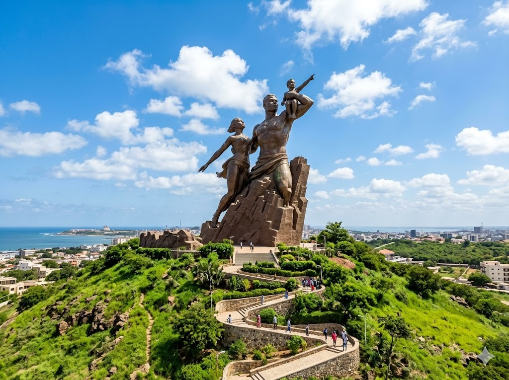
Das große DenkmalIn Dakar steht ein riesiges Denkmal aus Bronze. Es heißt Afrikanisches Renaissance-Denkmal. Die Statue zeigt eine Familie, die nach oben blickt. Sie ist über 50 Meter hoch. Man kann sie schon von Weitem sehen.
Grüne Wörter für die AppDakarriesiges DenkmalStatue zeigt eine Familieüber 50 Meter hochvon Weitem
Die AffenbrotbäumeÜberall in Senegal wachsen Baobab-Bäume. Man nennt sie auch Affenbrotbäume. Sie haben einen sehr dicken Stamm. Manche von ihnen sind viele hundert Jahre alt. Der Baobab ist ein Wahrzeichen des Landes.
Grüne Wörter für die AppBaobab-BäumeAffenbrotbäumedicken Stammhundert Jahre altWahrzeichen
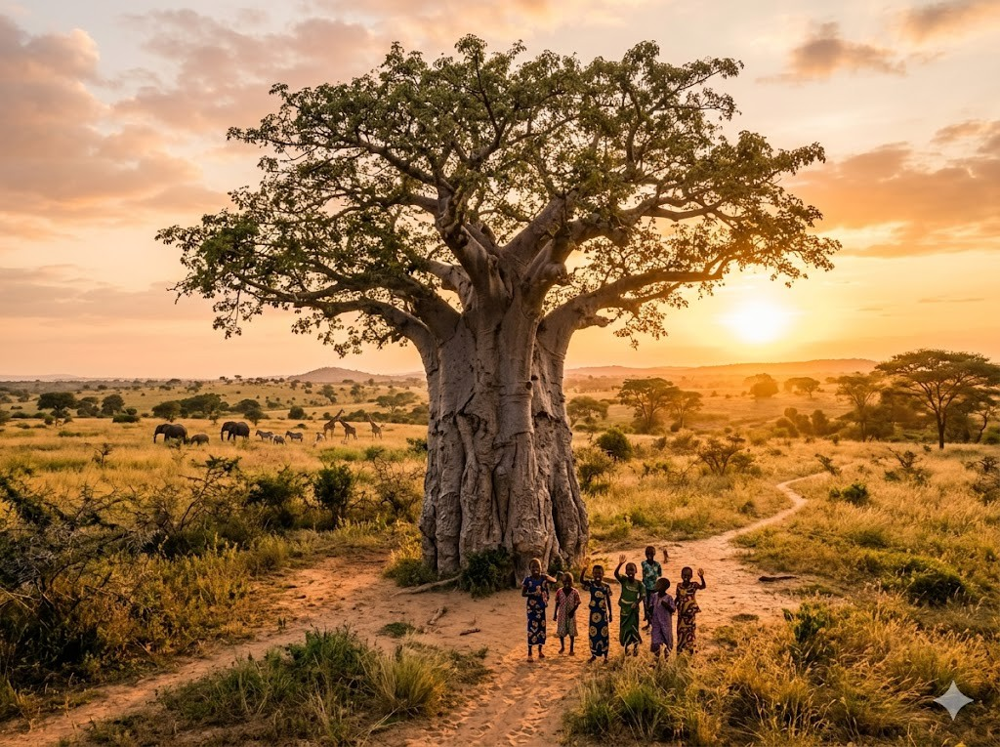
Diese Tiere leben in Senegal und sind ganz besonders.
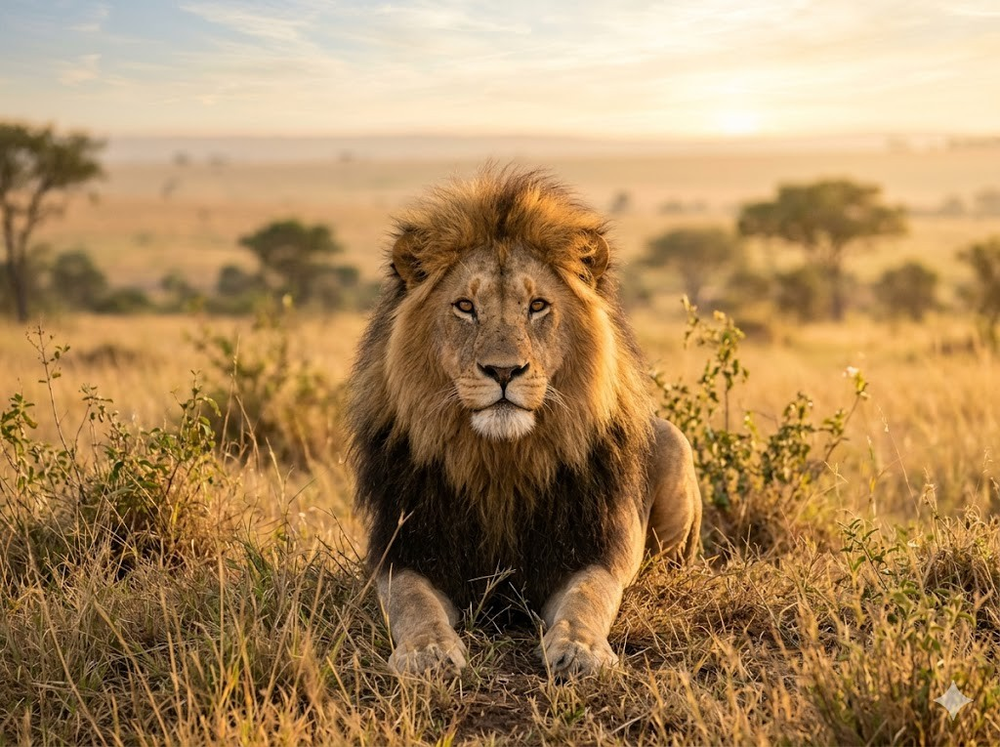
Der LöweDer Löwe ist das Wappentier von Senegal. Die Fußballer heißen sogar die Löwen von Teranga. Wilde Löwen leben im Niokolo-Koba-Nationalpark. Dort sind sie aber sehr selten geworden. Der Löwe ist trotzdem ein Stolz des Landes.
Grüne Wörter für die AppLöweWappentierLöwen von TerangaNiokolo-Koba-Nationalparkselten
Die FlamingosIm Djoudj-Vogelpark leben sehr viele Vögel. Dazu gehören rosa Flamingos. Sie stehen oft auf einem Bein im flachen Wasser. Mit ihrem Schnabel fischen sie kleine Tiere heraus. Tausende Vögel machen hier im Winter Rast.
Grüne Wörter für die AppDjoudj-Vogelparkrosa Flamingosauf einem BeinSchnabelTausende Vögel
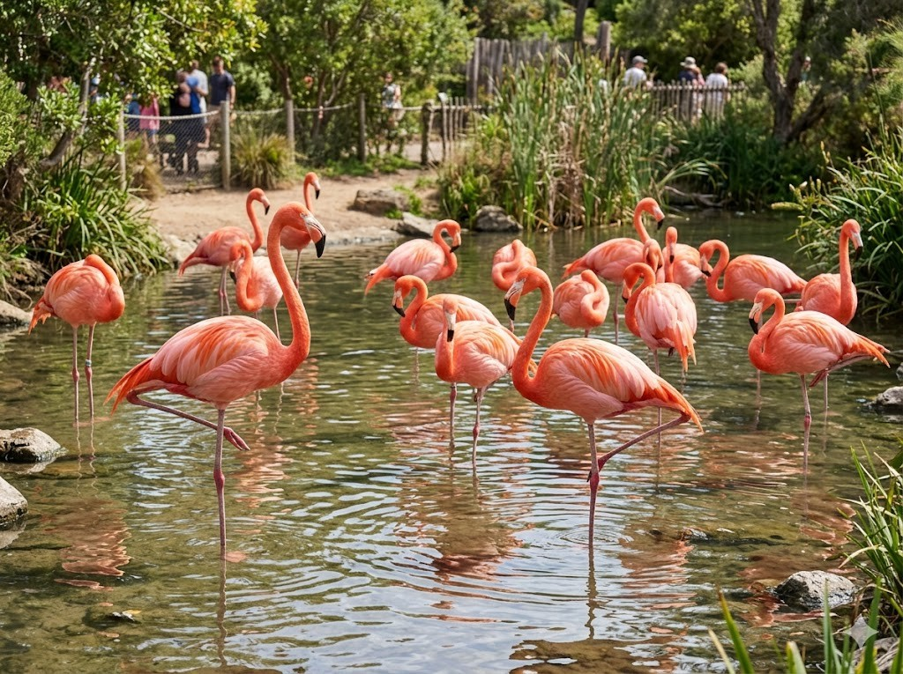
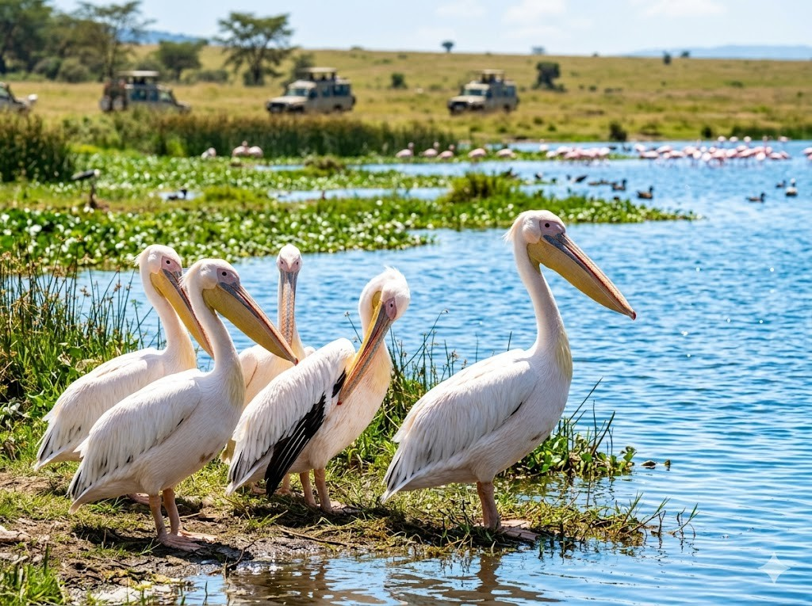
Die PelikaneIm Djoudj-Vogelpark leben auch große Pelikane. Sie haben einen sehr langen Schnabel mit einem Beutel. Damit fangen sie Fische aus dem Wasser. Pelikane fliegen oft in großen Gruppen. Am Wasser bauen sie ihre Nester.
Grüne Wörter für die AppPelikanelangen Schnabeleinem Beutelfangen sie Fischegroßen Gruppen
In der App kannst du beim Essen das Foto nehmen oder dein Gericht selbst malen.
ThieboudienneThieboudienne ist das Nationalgericht von Senegal. Es besteht aus Reis mit Fisch und Gemüse. Alles wird zusammen in einem großen Topf gekocht. Oft isst die ganze Familie aus einer Schüssel. Das Gericht schmeckt würzig und sättigt gut.
Grüne Wörter für die AppThieboudienneNationalgerichtReis mit Fischeinem großen Topfganze Familie
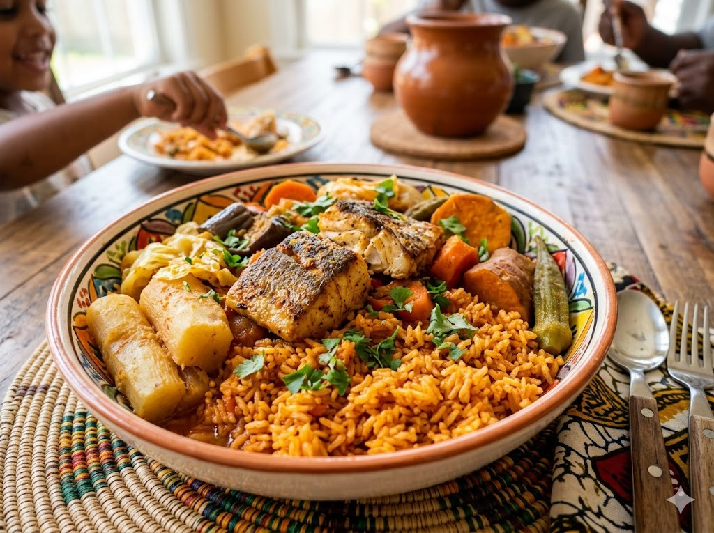
YassaYassa ist ein beliebtes Gericht mit Hähnchen. Dazu gibt es viele weiche Zwiebeln und Zitrone. Das macht das Essen schön sauer und frisch. Meistens wird Reis dazu serviert. Yassa schmeckt vielen Kindern besonders gut.
Grüne Wörter für die AppYassaHähnchenweiche Zwiebeln und Zitronesauer und frischReis
MaféMafé ist ein dicker Eintopf aus Erdnüssen. Die Erdnüsse werden zu einer cremigen Soße gemacht. Dazu kommen Fleisch und Gemüse in den Topf. Serviert wird das Ganze mit Reis. Mafé ist warm und sehr sättigend.
Grüne Wörter für die AppMafédicker Eintopf aus Erdnüssencremigen SoßeFleisch und GemüseReis
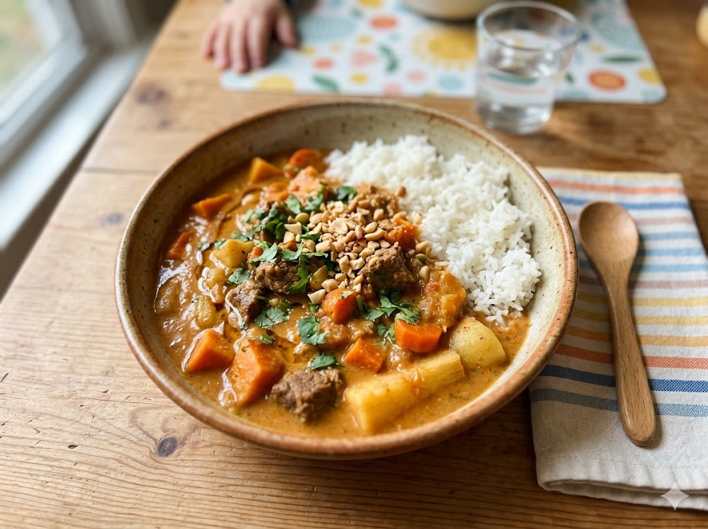
Die Mannschaft heißt die Löwen von Teranga. Teranga ist ein Wort für Gastfreundschaft. Senegal ist bei der WM 2026 dabei. 2022 wurde das Team sogar Afrikameister. Der bekannteste Spieler ist Sadio Mané, er spielt für Al-Nassr.
Grüne Wörter für die AppLöwen von TerangaGastfreundschaftWM 2026AfrikameisterSadio Mané
Schule und SpracheIn der Schule lernen die Kinder auf Französisch. Zu Hause sprechen viele aber Wolof. So wachsen sie mit zwei Sprachen auf. Manche Kinder helfen nach der Schule der Familie. Bildung ist den Familien sehr wichtig.
Grüne Wörter für die AppSchuleFranzösischWolofzwei SprachenBildung
Trommeln und MusikMusik gehört in Senegal einfach dazu. Kinder lernen schon früh das Trommeln. Bekannt sind die Trommeln Djembe und Sabar. Bei Festen wird viel getanzt. Das Trommeln macht den Kindern großen Spaß.
Grüne Wörter für die AppMusikTrommelnDjembe und Sabargetanztgroßen Spaß
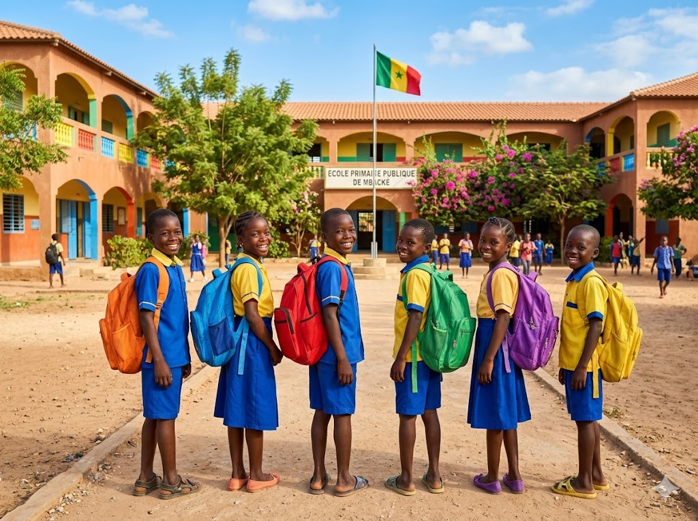